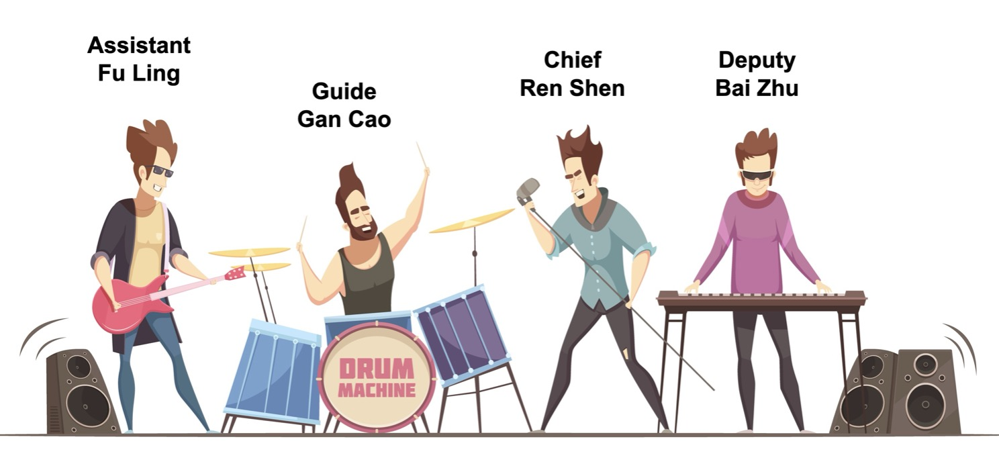

Si Jun Zi Tang (四君子湯)
Si Jun Zi Tang is a fundamental formula for tonifying Qi, originating from the Song Dynasty. It is based on Li Zhong Wan from the Shanghan Lun, modified to treat dampness due to Spleen Qi deficiency.
Li Zhong Wan
- Ren Shen
- Bai Zhu
- - Gan Jiang
- Gan Cao
Si Jun Zi Tang
- Ren Shen
- Bai Zhu
- + Fu Ling
- Gan Cao
The Four Gentlemen: A Band Analogy
Ren Shen (人蔘) & Bai Zhu (白朮) 🎤🎹
Function: Tonify Spleen Qi (Vocals & Keyboard)
Like the lead vocalist and keyboard, these herbs perform the main function: strongly tonifying the Spleen Qi.
Fu Ling (茯苓) 🎸
Function: Drain Dampness (Bass Guitar)
Playing the low-end rhythm, this herb resolves the secondary problem of dampness that accumulates when the Spleen is weak.
Gan Cao (甘草) 🥁
Function: Harmonization (Drums)
Like the drums setting the rhythm, Gan Cao mediates and harmonizes all the herbs, ensuring the entire formula works together smoothly.
Origins and Composition
Si Jun Zi Tang (四君子湯) consists of Ren Shen (人蔘), Bai Zhu (白朮), Fu Ling (茯苓), and Gan Cao (甘草). It is derived from Li Zhong Wan (理中丸). The substitution of Gan Jiang with Fu Ling reduces the warming action and enhances the ability to resolve dampness arising from spleen deficiency.
사군자탕 (四君子湯)
사군자탕은 기(Qi)를 보하는 대표적인 처방으로, 상한론의 이중환(理中丸)에 기반을 두고 있습니다. 비기허(脾氣虛)로 인해 발생하는 습(濕)을 치료하는 데 중점을 둔 처방입니다.
이중환 (理中丸)
- 인삼
- 백출
- - 건강
- 감초
사군자탕 (四君子湯)
- 인삼
- 백출
- + 복령
- 감초
네 명의 군자: 밴드 비유
인삼 (人蔘) & 백출 (白朮) 🎤🎹
기능: 비기 보충 (보컬 & 키보드)
마치 밴드의 보컬과 키보드처럼, 처방의 핵심 기능인 비기(脾氣) 보충을 강력하게 수행합니다.
복령 (茯苓) 🎸
기능: 습기 제거 (베이스 기타)
낮은 음으로 리듬을 잡는 베이스처럼, 비장이 허약할 때 부수적으로 쌓이는 습기(濕)를 제거하는 역할을 합니다.
감초 (甘草) 🥁
기능: 조화 (드럼)
드럼이 전체 음악의 박자를 맞추듯, 감초는 모든 약재의 효능을 조화롭게 중재하여 처방 전체가 원활하게 작용하도록 돕습니다.
유래와 구성
사군자탕(四君子湯)은 인삼(人蔘), 백출(白朮), 복령(茯苓), 감초(甘草)로 구성되어 있습니다. 이중환(理中丸)에서 건강(乾薑) 대신 복령을 사용하여, 처방의 성질이 따뜻함보다는 습기를 제거하는 쪽으로 조절되었습니다.